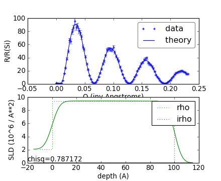

Defining a film¶
We start with a basic example, a nickel film on silicon:
{kind=link}
This model shows three layers (silicon, nickel, and air) as seen in the solid green line (the step profile). In addition we have a dashed green line (the smoothed profile) which corresponds the effective reflectivity profile, with the \exp(-2 k_n k_{n+1} \sigma^2) interface factored in.
This model is defined in nifilm.py.
You can preview the model on the command line:
$ refl1d nifilm.py --preview
Lets examine the code down on a line by line basis to understand what is going on.
The first step in any model is to load the names of the functions and data that we are going to use. These are defined in a module named refl1d.names, and we import them all as follows:
::
from refl1d.names import *
This statement imports functions like SLD and Material for defining materials, Parameter, Slab and Stack for defining materials, NeutronProbe and XrayProbe for defining data, and Experiment and FitProblem to tie everything together.
Note that ‘import *’ is bad style for anything but simple scripts. As programs get larger, it is much less confusing to list the specific functions that you need from a module rather than importing everything.
Next we define the materials that we are going to use in our sample. silicon and air are common, so we don’t need to define them. We just need to define nickel, which we do as follows:
::
nickel = Material(‘Ni’)
This defines a chemical formula, Ni, for which the program knows the density in advance since it has densities for all elements. By using chemical composition, we can compute scattering length densities for both X-ray and neutron beams from the same sample description. Alternatively, we could take a more traditional approach and define nickel as a specific SLD for our beam
#nickel = SLD(rho=9.4)
The ‘#’ character on the above line means that line is a comment, and it won’t be evaluated.
With our materials defined (silicon, nickel and air), we can combine them into a sample. The substrate will be silicon with a 5 Å 1-\sigma Si:Ni interface. The nickel layer is 100 Å thick with a 5 Å Ni:Air interface. Air is on the surface.
sample = silicon(0,5) | nickel(100,5) | air
Our sample definition is complete, so now we need to specify the range of values we are going to view. We will use the numpy library, which extends python with vector and matrix operations. The linspace function below returns values from 0 to 5 in 100 steps for incident angles from 0° to 5°.
T = numpy.linspace(0, 5, 100)
From the range of reflection angles, we can create a neutron probe. The probe defines the wavelengths and angles which are used for the measurement as well as their uncertainties. From this the resolution of each point can be calculated. We use constants for angular divergence dT=0.01°, wavelength L=4.75 Å and wavelength dispersion dL=0.0475 in this example, but each angle and wavelength is independent.
probe = NeutronProbe(T=T, dT=0.01, L=4.75, dL=0.0475)
Combine the neutron probe with the sample stack to define an experiment. Using chemical formula and mass density, the same sample can be simulated for both neutron and x-ray experiments.
M = Experiment(probe=probe, sample=sample)
Generate a random data set with 5% noise. While not necessary to display a reflectivity curve, it is useful in showing how the data set should look.
M.simulate_data(5)
Combine a set of experiments into a fitting problem. The problem is used by refl1d for all operations on the model.
problem = FitProblem(M)